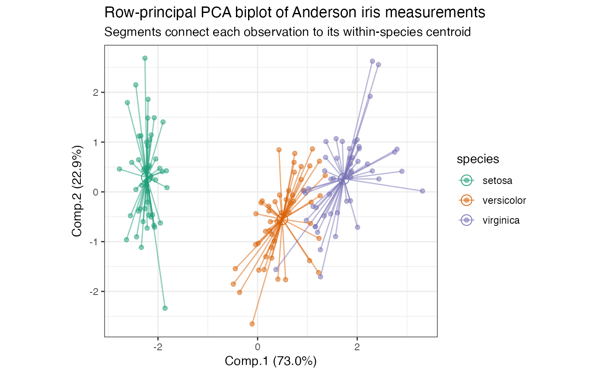
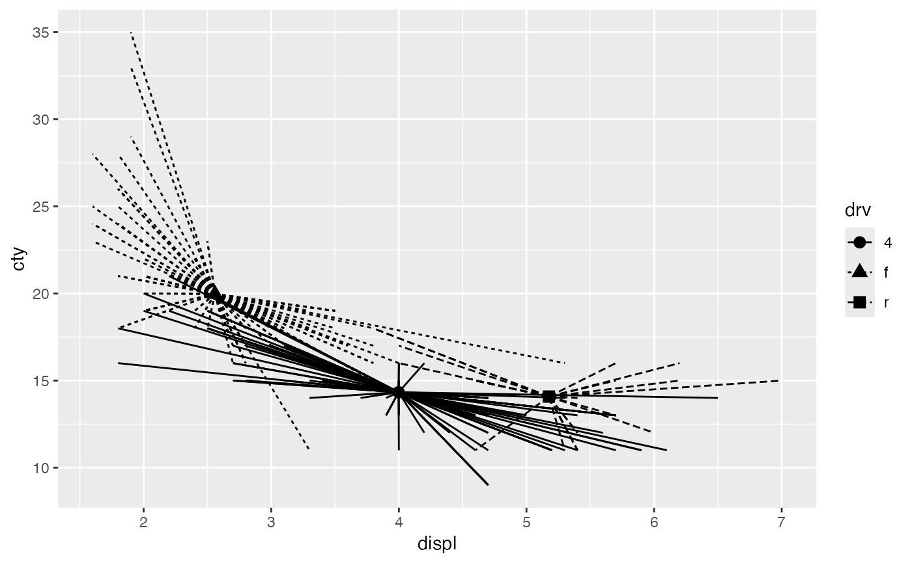

stat_center.RdCompute geometric centers and spreads for ordination factors
stat_center( mapping = NULL, data = NULL, geom = "point", position = "identity", show.legend = NA, inherit.aes = TRUE, ..., fun.data = NULL, fun.center = NULL, fun.min = NULL, fun.max = NULL, fun.args = list() ) stat_star( mapping = NULL, data = NULL, geom = "segment", position = "identity", show.legend = NA, inherit.aes = TRUE, ..., fun.data = NULL, fun.center = NULL, fun.args = list() )
| mapping | Set of aesthetic mappings created by |
|---|---|
| data | The data to be displayed in this layer. There are three options: If A A |
| geom | The geometric object to use display the data |
| position | Position adjustment, either as a string, or the result of a call to a position adjustment function. |
| show.legend | logical. Should this layer be included in the legends?
|
| inherit.aes | If |
| ... | Additional arguments passed to |
| fun.data, fun.center, fun.min, fun.max, fun.args | Functions and arguments
treated as in |
ggbiplot() uses ggplot2::fortify() internally to produce a single data
frame with a .matrix column distinguishing the subjects ("rows") and
variables ("cols"). The stat layers stat_rows() and stat_cols() simply
filter the data frame to one of these two.
The geom layers geom_rows_*() and geom_cols_*() call the corresponding
stat in order to render plot elements for the corresponding factor matrix.
geom_dims_*() selects a default matrix based on common practice, e.g.
points for rows and arrows for columns.
Other stat layers:
stat_chull(),
stat_spantree()
# scaled PCA of Anderson iris measurements iris[, -5] %>% princomp(cor = TRUE) %>% as_tbl_ord() %>% mutate_rows(species = iris$Species) %>% print() -> iris_pca#> # A tbl_ord of class 'princomp': (150 x 4) x (4 x 4)' #> # 4 coordinates: Comp.1, Comp.2, ..., Comp.4 #> # #> # Rows: [ 150 x 4 | 1 ] #> Comp.1 Comp.2 Comp.3 ... | species #> | <fct> #> 1 -2.26 0.480 0.128 | 1 setosa #> 2 -2.08 -0.674 0.235 ... | 2 setosa #> 3 -2.36 -0.342 -0.0442 | 3 setosa #> 4 -2.30 -0.597 -0.0913 | 4 setosa #> 5 -2.39 0.647 -0.0157 | 5 setosa #> # … with 145 more rows #> # #> # Columns: [ 4 x 4 | 0 ] #> Comp.1 Comp.2 Comp.3 ... | #> | #> 1 0.521 0.377 0.720 | #> 2 -0.269 0.923 -0.244 ... | #> 3 0.580 0.0245 -0.142 | #> 4 0.565 0.0669 -0.634 |# row-principal biplot with centroids iris_pca %>% ggbiplot(aes(color = species)) + theme_bw() + scale_color_brewer(type = "qual", palette = 2) + geom_rows_point(alpha = .5) + stat_rows_center(fun.center = "mean", size = 3, shape = "triangle") + ggtitle( "Row-principal PCA biplot of Anderson iris measurements", "Overlaid with centroids and 99% confidence ellipses" )# row-principal biplot with centroid-based stars iris_pca %>% ggbiplot(aes(color = species)) + theme_bw() + scale_color_brewer(type = "qual", palette = 2) + stat_rows_star(alpha = .5, fun.center = "mean") + geom_rows_point(alpha = .5) + ggtitle( "Row-principal PCA biplot of Anderson iris measurements", "Segments connect each observation to its within-species centroid" )